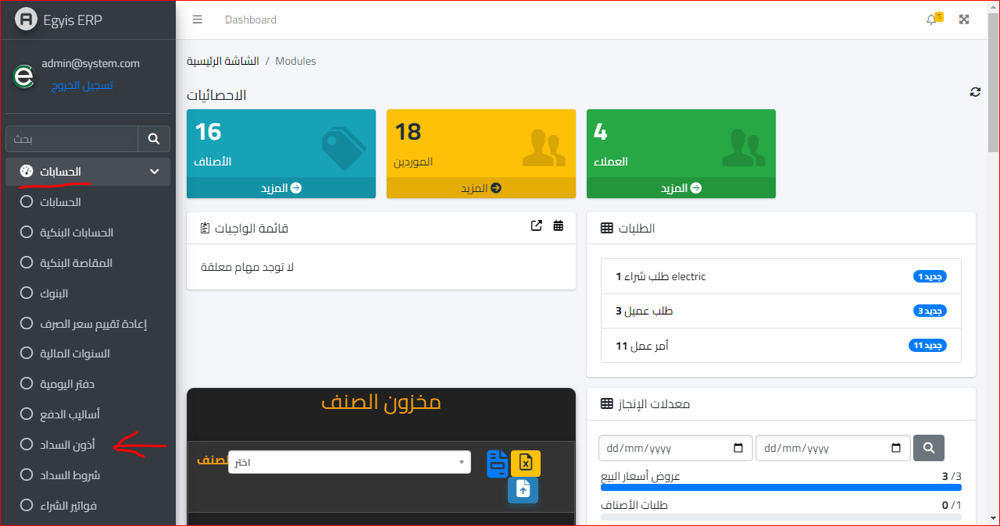
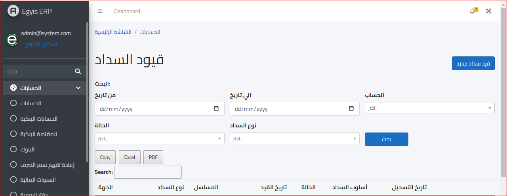
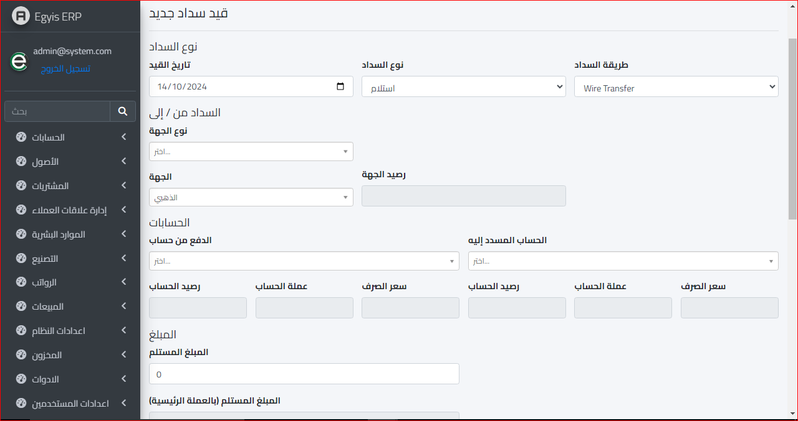
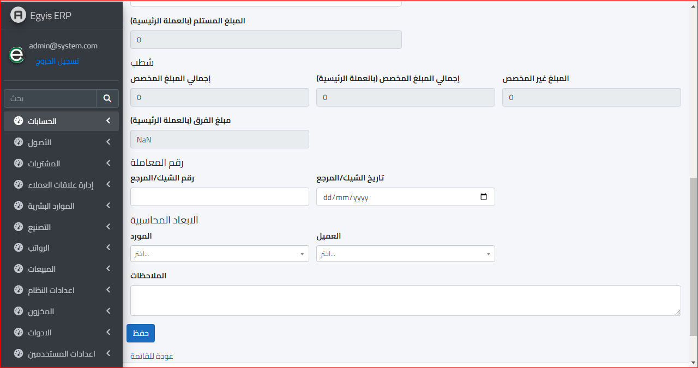
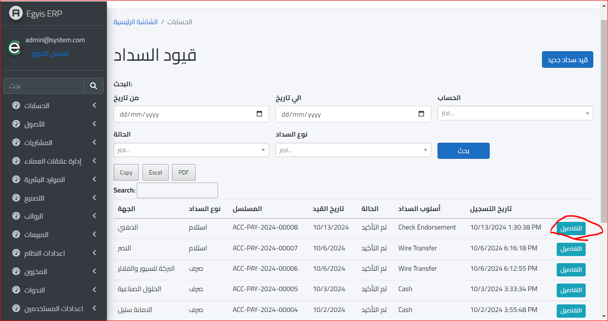

أذون السداد
لكي نتمكن من عرض أذون السداد نقوم بفتح موديول الحسابات واختيار أذون السداد كالتالي :
ثم بعد ذلك ستفتح الشاشة التالية :
ولعمل قيد سداد جديد يتم نقر زر قيد سداد جديد و سنتوجه للشاشة القادمة :
 تاريخ القيد : وهو التاريخ المراد وضعه لهذا القيد
نوع السداد : وهو تحديد ما إذا كان استلام او دفع او قد يكون تحويل داخلي
طريقة السداد : سواء كان نقدا أو بشيك أو نحو ذلك
نوع الجهة : هل هو عميل او موظف او مورد
الجهة : وهو يتعلق بنوع الجهة فلو اخترت نوع الجهة عميل فيظهر بالجهة كل العملاء وهكذا
رصيد الجهة : وهو مجمل الرصيد الحالي للجهة المرادة
الدفع من حساب : يقصد به أي الطرف الأول للقيد و سيختلف طبقا لطبيعة عملية القيد
الحساب المسدد إليه : وهو الطرف الثاني للقيد
رصيد الحساب : وهنا إجمالي رصيد الحساب الخاص بالجهة ( الطرف الأول )
عملة الحساب : وهي توضع تلقائيا حسب الاعدادات المعدة سابقا للحساب نفسه ( الطرف الأول )
سعر الصرف : وهو خاص في الحسابات التي تكون عملتها غير العملة الرئيسية للشركة ( الطرف الأول )
رصيد الحساب : وهنا إجمالي رصيد الحساب الخاص بالجهة ( الطرف الثاني)
عملة الحساب : وهي توضع تلقائيا حسب الاعدادات المعدة سابقا للحساب نفسه ( الطرف الثاني)
سعر الصرف : وهو خاص في الحسابات التي تكون عملتها غير العملة الرئيسية للشركة ( الطرف الثاني)
المبلغ المستلم : سواء الطرف الأول للقيد أو الثاني
المبلغ المستلم (بالعملة الرئيسية) : سواء الطرف الأول للقيد أو الثاني ولكن بالعملة الرئيسية للشركة
ثم بعد الانتهاء من ادخال البيانات المطلوبة يتم الضغط على زر حفظ
وستظهر الشاشة التالية : ويمكن عرض تفاصيل القيد عن طريق نقر زر التفاصيل
